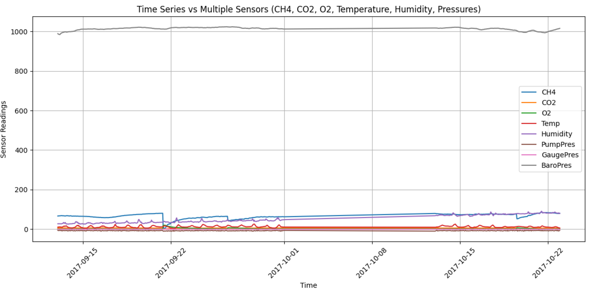

About
This project develops an automated anomaly detection system for the oil and gas industry, using real-time sensor data (e.g., gas levels, temperature, pressure) to identify abnormal patterns. It combines models like Isolation Forest, Local Outlier Factor, Robust Covariance, and One-Class SVM for accurate detection. The system improves safety, efficiency, and cost-effectiveness by quickly addressing critical anomalies in operations.
Methodology
This graph shows the relationship between time and methane levels in the system. It helps identify trends and any unusual spikes that could indicate anomalies.
This graph visualizes data from multiple sensors over time, highlighting any discrepancies or abnormal behavior across various parameters.
